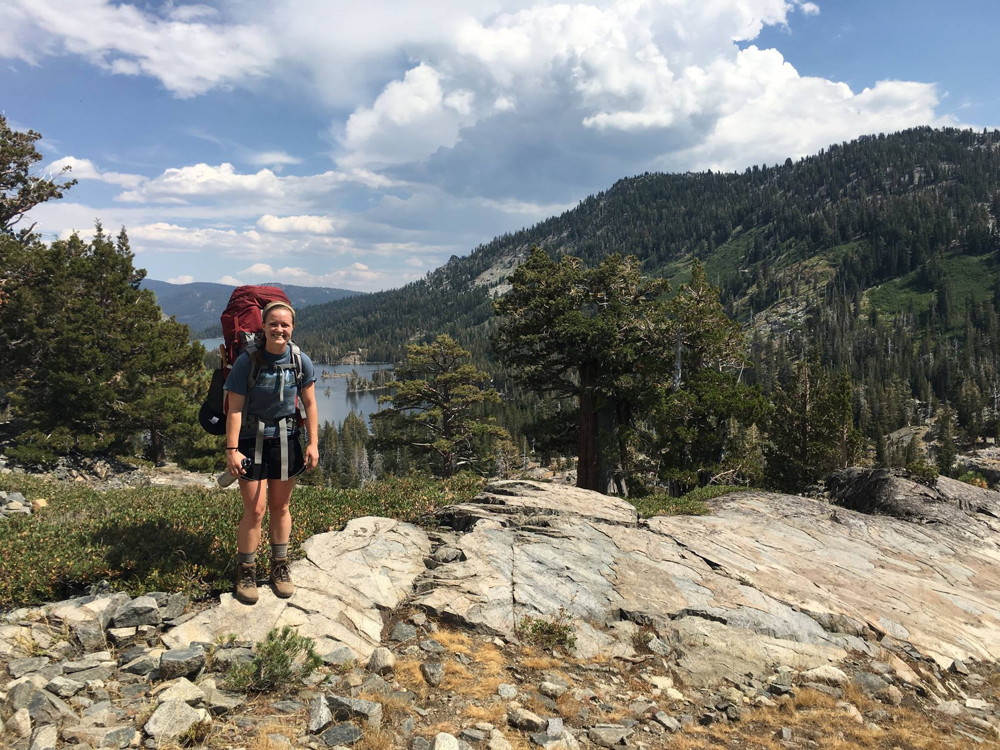

Bio
email: bmockler AT carnegiescience DOT edu

I'm currently a CTAC Postdoctoral Fellow at Carnegie Observatories in Pasadena, where I research high energy transients and supermassive black holes. I received my Ph.D. in Astronomy & Astrophysics at UC Santa Cruz, where I worked with Enrico Ramirez-Ruiz on high energy astrophysics. Outside of research I love playing soccer, hiking, surfing, swimming in the ocean, and generally exploring all the great nature California has to offer.